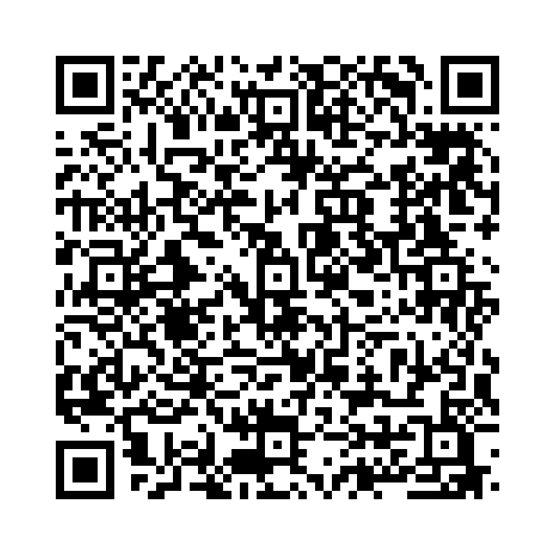

強調構文 は、文中の特定の部分を際立たせるために使用される構文です。
以下の単語を並び替えて正しい文を作成しましょう。（和訳を参考にしてください）

問題1: (was / it / broke / Tom / the vase / that) - 花瓶を割ったのはトムだった。
解答: It was Tom that broke the vase.
解説: It was ～ that の形でトムを強調しています。
問題2: (is / need / I / what / a break) - 私が必要なのは休息だ。
解答: What I need is a break.
解説: What ～ is の構文で「必要なもの」を強調しています。
問題3: (was / not / it / until / knew / I / yesterday / that / the truth) - 昨日になって初めて真実を知った。
解答: It was not until yesterday that I knew the truth.
解説: It was not until ～ that 構文で強調しています。
問題4: (all / is / peace / want / I) - 私が欲しいのは平和だけだ。
解答: All I want is peace.
解説: All ～ の構文で「平和だけ」を強調しています。
問題5: (is / why / he / the reason / left / unknown) - 彼が去った理由は不明だ。
解答: The reason why he left is unknown.
解説: The reason why ～ の構文で理由を強調しています。